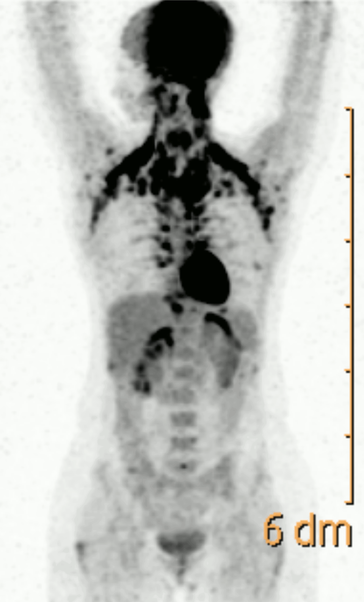

If you prefer this database to continue, please donate in crypto - your donation matters.
Note: Crypto makes it smoother for me to get the donations, since not every payment method is working in the country I live in.
Thank you!

ELEK19 is an on-going database project, made on Oct 4, 2026, published on Nov 6, 2026 - This database project aims to preserve files and content related to critical human and post-human expressions.
Preserved Media Includes:
- Websites, books, philosophy, and software
- Music, audio, sounds, videos, and video games
- Articles, fiction, artworks, and documentaries/films
Core Themes & Subjects:
- Technology, post-humanism, ethics, and research
- War, survival, genocides, diseases, and apocalypse
- Mathematics, physics, chemistry, history, and societal collapse
- Sentient rights, individualism, linguistics, and cyber-feminism
- Social good, welfare, and the reduction of harm and suffering.
- etc.
This database is recently divided into two main parts:
1- An Archive for The Cyborg Citizen.
&
2- Pre- and Post-Apocalyptic Optimization Database.
Content for this ongoing project will be updated on a monthly basis.
IMPORTANT SYSTEMS INFO: ELEK19 DATABASE: Version (1.0).
~Idea, data collections and designs done/made and curated by Aeldari Nasim using Figma, the content is human-original, no content is made using AI/LLMs the idea is not taken from someone else, all the files belong to human creators as mentioned in the database, the design then has been encoded using AI → see her design process on version 1.0, here.~
{read on the process of how this was made and how she has used/assisted with the AI} → on her GitHub profile.~
~This web is hosted by Vercel.~
Please respect the licenses of the cited source directories.
Contact: aeldari.nasim@atomicmail.io